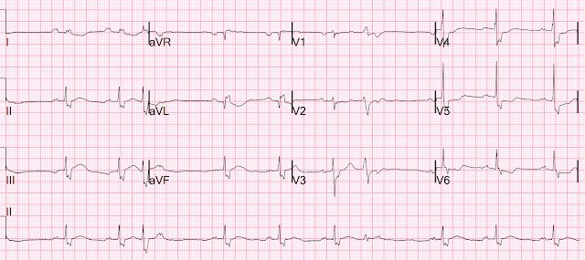
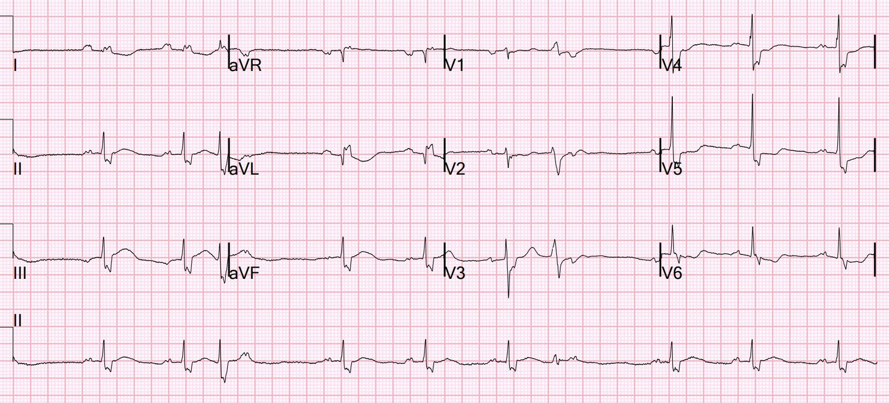
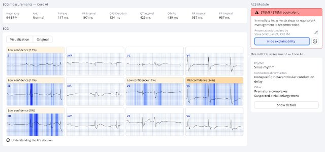
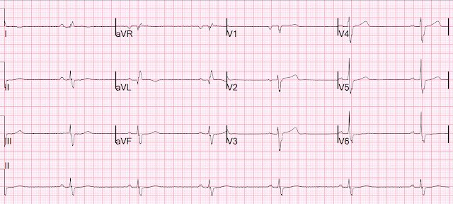
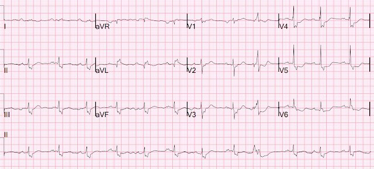
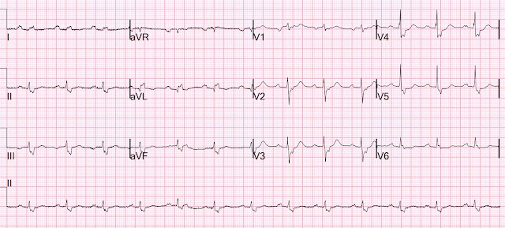
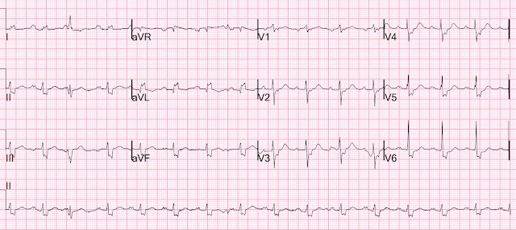
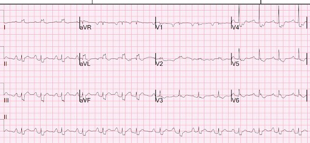
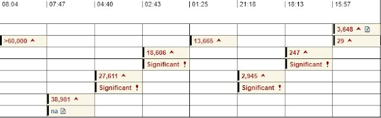
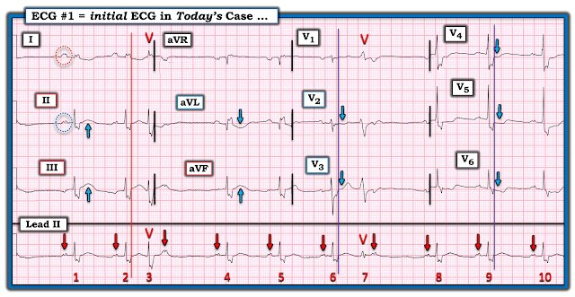

01/07/2026 — NSTEMI (Non-STEMI, hay nhồi máu cơ tim không ST chênh lên) là một chẩn đoán hoàn toàn vô giá trị.
Bản dịch tiếng Việt của bài "NSTEMI (Non-STEMI, or Non ST Elevation MI) is a totally worthless diagnosis." – Dr. Smith’s ECG Blog. Giữ nguyên toàn bộ 10 hình ảnh của bản gốc.


Điện tâm đồ này được gửi cho tôi mà không kèm thông tin gì.


Bạn nghĩ gì?
Tôi trả lời: “OMI thành dưới”
Sau đó người gửi mới gửi thông tin lâm sàng:
Một phụ nữ ngoài 50 tuổi, tiền sử bệnh cơ tim không do thiếu máu cục bộ với EF 20-25%, đang dùng các thuốc điều trị suy tim phân suất tống máu giảm (HFrEF), than phiền nôn, đau lưng trên và tức ngực bắt đầu ngay trong ngày nhập viện. Bà cũng than nặng và yếu cả hai tay. Bà nói với một nhân viên y tế khác rằng bà khó thở, nhất là khi gắng sức.
Các triệu chứng này đã bắt đầu từ vài ngày trước: Hai chân thấy nặng. Rồi hai tay thấy nặng. Rồi bà thử leo cầu thang và bị khó thở rất nhiều. Bà lo hơn khi, vào sáng sớm ngày nhập viện, bà xuất hiện buồn nôn, nôn và đau vai trái, ngoài các triệu chứng đã nêu trước đó. Bà đến khoa cấp cứu (ED) để được đánh giá thêm.
Điện tâm đồ đã được bác sĩ phân loại chỉ định 12 phút sau khi bệnh nhân đến, nhưng mãi đến 90 phút sau khi đến mới được ghi vì khoa quá đông.
Đây là bản ghi đó một lần nữa, giống hệt bản ở trên:

Bạn nghĩ gì?
= = =
= = =
Có chậm dẫn truyền trong thất dạng giống RBBB, với sóng S rộng ở các chuyển đạo dưới và V2-V6. Có STE kín đáo ở chuyển đạo III kèm STD soi gương (reciprocal) kín đáo ở aVL. Sóng T ở III rất “phồng to” (sóng T tối cấp – Hyperacute T-wave, HATW), với diện tích dưới đường cong lớn, và sóng T đảo ngược soi gương ở aVL cũng tối cấp tương đương (HATW soi gương đảo ngược). Có ST chênh xuống do thiếu máu cục bộ ở V4-6.
Tôi nói rằng điện tâm đồ này gần như chẩn đoán xác định nhồi máu cơ tim do tắc (OMI) thành dưới cấp.
Đây là một điện tâm đồ rất khó, nhưng nó có giá trị chẩn đoán! Và phải cố gắng học từ nó.
Mô hình AI PMCardio Queen of Hearts nhận ra OMI, đặc biệt ở chuyển đạo III.


Điều thú vị là “bà Hoàng” không tô sáng ST chênh xuống soi gương và sóng T tối cấp đảo ngược soi gương ở aVL.
“Bà” cho điểm 0.90, mức RẤT ĐẶC HIỆU (độ đặc hiệu >98%). Mọi điện tâm đồ đều được cho một con số từ 0-1.0. Các điểm trên 0.50 có độ đặc hiệu gộp 98%, nhưng trong khoảng đó, nếu cao hơn 0.75 thì độ đặc hiệu cao hơn, còn nếu thấp hơn thì độ đặc hiệu thấp hơn)
“Bà” chẩn đoán OMI (“STEMI/tương đương STEMI”)
Đáng tiếc là thuật toán máy tính truyền thống không thấy gì ngoài IVCD và PVC, và bác sĩ cấp cứu đọc lại (overread) đã xác nhận kết quả đó mà không ghi nhận bằng chứng của OMI.
Điện tâm đồ cũ 3 tháng trước:
(cả tôi lẫn Queen đều không được xem bản này)


Giờ có thể thấy các dấu hiệu nêu trên chắc chắn là mới (cấp).
= = =
Bà được đưa vào buồng khám lúc 100 phút sau khi đến, lúc đó kết quả troponin I độ nhạy cao (hs troponin I), lấy máu lúc 1 giờ sau khi đến, trả về 29 ng/L (tăng đối với phụ nữ, với giới hạn trên tham chiếu (URL) là 16 ng/L, nhưng cũng phù hợp với HFrEF mạn; thật vậy, các lần troponin trước đây nằm trong khoảng 24-31)
Khám thực thể phù hợp với suy tim và NT-proBNP tăng ở mức 3648 (gần mức nền của bà, và phù hợp với suy tim cấp hoặc mạn). Đáng tiếc là troponin tăng nhẹ trong suy tim mạn không phải là hiếm, nên mức troponin tăng đó không làm ai lo lắng. Siêu âm tại giường cho thấy đường B lan tỏa. X-quang ngực cho thấy phù phổi.
Không rõ đau ngực và đau tay có kéo dài liên tục hay không, vì không có ghi chú nào về điều này — nhưng một điện tâm đồ khác được ghi lúc 2.5 giờ:
= = =
Một điện tâm đồ khác được ghi lúc 2.5 giờ:


Điều này chứng minh điện tâm đồ đầu tiên đúng là có thiếu máu cục bộ, vì mọi dấu hiệu thiếu máu cục bộ đều đã biến mất!
OMI đã tái tưới máu. Nhưng không ai nhận ra …
OMI đã tái tưới máu có nguy cơ tắc lại rất cao!!
= = =
Lúc 3 giờ sau khi đến, lấy thêm một mẫu troponin và kết quả là 247 ng/L. Vậy chắc chắn có nhồi máu cơ tim cấp.
Một điện tâm đồ khác được ghi lúc 5.5 giờ.


Vẫn không có thiếu máu cục bộ …
= = =
Lúc 6 giờ sau khi đến, một kết quả troponin khác trả về 2945 ng/L.
Hội chẩn tim mạch:
“Không có đau ngực do tim khi đến hôm nay. Theo ghi nhận, bà có đau ngực tái hiện được (khi ấn).”
“Điện tâm đồ có IVCD tương tự trước đây nhưng QRS rộng hơn, chủ yếu do sóng S nổi bật. Có vùng ST-T dạng vòm (coving) ở các chuyển đạo dưới kèm thay đổi soi gương ở I và aVL. Hình ảnh soi gương đã có trên một điện tâm đồ cũ từ 3 tháng trước, tuy nhiên giờ rõ rệt hơn.”
Smith: Tôi không thấy “coving” hay hình ảnh soi gương nào trên điện tâm đồ cũ (ở trên).
Tim mạch viết tiếp: “Trong bối cảnh IVCD và thời gian QRS kéo dài dần, đã bàn về mức độ chắc chắn lâm sàng của các dấu hiệu này như là chỉ dấu tổn thương. Ngoài TnI đang tăng, bệnh cảnh lâm sàng không phù hợp với hội chứng vành cấp.”
Smith: Tại sao không?
Hãy nói rõ: bệnh nhân này có khó chịu ở ngực và troponin RẤT cao. Gọi cơn đau ngực là “tái hiện được” chỉ là một cái cớ. Có đau cả hai tay, một triệu chứng có xác suất tiền nghiệm rất cao. Giờ đây đã chứng minh đây là đau ngực do thiếu máu cơ tim và cơn đau liên tục. Vì vậy bệnh nhân cần vào phòng thông tim (cath lab) NGAY.
Một điện tâm đồ khác được ghi:


Không có thiếu máu cục bộ.
= = =
Bà được nhập viện, và nhu cầu oxy tăng lên 10 lít (phù phổi nặng thêm).
Troponin của bà tăng lên 13,000 đến 19,000, rồi lên 28,000.
Một điện tâm đồ khác lúc 11 giờ cũng tương tự.
Rồi lúc 16 giờ sau khi đến, bà bị rung thất (ngừng tim do VF).
Bà được hồi sức và ghi được điện tâm đồ này.


Ở thời điểm này không thấy rõ thiếu máu cục bộ.
= = =
Diễn biến troponin — giá trị đầu tiên ở tận cùng bên phải, giá trị cuối cùng ở tận cùng bên trái.


Vậy troponin đỉnh lớn hơn 60,000, tức là một nhồi máu cơ tim diện rộng.
Quá cao để đo được. Và điều đó đã rõ ngay trên điện tâm đồ đầu tiên, lúc mà lẽ ra đã có thể can thiệp.
Vậy tại thời điểm này, phải coi điện tâm đồ đó là OMI, và nó đã bị bỏ sót.
Đây là lý do “NSTEMI” là một chẩn đoán hoàn toàn vô giá trị và là chẩn đoán vô giá trị.
Để minh họa “NSTEMI” vô giá trị đến mức nào, hãy xem điều này: Chúng tôi đã chỉ ra rằng chẩn đoán cuối cùng STEMI hay NSTEMI ít liên quan đến việc có hay không có tắc mạch, và ít liên quan đến việc có hay không có ST chênh lên. Nó chỉ tương quan với thời gian từ cửa đến bóng (Door to Balloon Time)!
= = =
Chụp mạch vành:
- Nhồi máu cơ tim cấp không ST chênh lên (Non ST Elevation Myocardial Infarction) .
- Biến chứng VT đa dạng (Smith: có lẽ thực ra là VF), hồi sinh tim phổi kéo dài tại đơn vị CMIC, được đưa khẩn cấp đến phòng thông tim (CCL)
- Thủ phạm là hẹp 100% đoạn xa LCX .
- Tổn thương được giảm xuống 0 % bằng stent phủ thuốc (DES) Synergy 2.75 x 20 .
- Đánh giá LCX bằng siêu âm trong lòng mạch (IVUS) để tìm SCAD. Không có SCAD, nhưng có tắc do huyết khối ở đoạn xa LCX mà không thấy mảng xơ vữa vỡ rõ ràng. = =
Bệnh nhân sốc tim, được đặt bóng bơm nội động mạch chủ.
Bình luận cuối: không rõ vì sao chỉ điện tâm đồ đầu tiên cho thấy OMI. Có lẽ động mạch lúc mở lúc tắc, và chỉ ghi được một lần trong pha tắc. Nhưng đến lúc chụp mạch thì lại tắc.
= Siêu âm tim:
- Cuộc siêu âm bị gián đoạn 18 phút vì VT và cần hồi sức.
- Buồng thất trái giãn nhẹ, thành tim dày nhẹ và rối loạn chức năng tâm thu thất trái nặng.
- Phân suất tống máu thất trái ước tính là 10-15 %.
- Giảm động toàn bộ nặng. Vận động vách liên thất không đồng bộ, có thể do IVCD.= = =
Đáng tiếc là, sau một thời gian nằm viện dài, bệnh nhân đã tử vong.
Những điểm cần học:
- Con người có thể bỏ sót hoàn toàn những điện tâm đồ chết người, và chúng ta không nên kỳ vọng ai cũng có trình độ như vậy. Queen cũng có thể bỏ sót và chẩn đoán quá mức, nhưng ít hơn con người rất nhiều. Khi so sánh Queen (chỉ dùng điện tâm đồ) với con người (có trước mặt toàn bộ dữ liệu: điện tâm đồ, bệnh sử, khám thực thể và hồ sơ cũ), và Queen với con người bất đồng, thì khả năng Queen đúng cao gấp 7.5 lần so với con người!
- Chúng tôi hy vọng Queen of Hearts sẽ sớm được FDA chấp thuận và đưa vào sử dụng.
- Luôn so sánh với điện tâm đồ trước đó! Dù bất tiện, sự khác biệt có thể đã lộ rõ và có lẽ đã cứu được một mạng người.
- Khi có đau ngực và troponin tăng không giải thích được, điều chắc chắn đúng ở thời điểm 3 giờ sau khi đến (lúc đó troponin đã tăng từ 29 lên 247), thì mức tăng đó có giá trị chẩn đoán nhồi máu cơ tim và nếu còn bất kỳ đau ngực, khó thở (SOB), phù phổi nào, thì bệnh nhân phải vào phòng thông tim bất kể điện tâm đồ thế nào!
- NSTEMI là một chẩn đoán vô giá trị. Không có STE đủ tiêu chuẩn chẩn đoán chỉ mô tả một dấu hiệu điện tâm đồ đơn lẻ, nhưng gần như không nói lên điều gì về việc có hay không có tắc động mạch vành cấp, hay về tình trạng của bệnh nhân.
- NSTEMI kèm “không ổn định” là chỉ định theo khuyến cáo để kích hoạt phòng thông tim cấp cứu, (dù chỉ được tuân thủ ở 6% số ca)
- NSTEMI kèm “không ổn định” thường là một OMI bị bỏ sót đã có biến chứng!
======================================
BÌNH LUẬN CỦA TÔI, bởi KEN GRAUER, MD (1/7/2026):
Tôi đã có một “linh cảm xấu” khi đọc ca này. Giống như Dr. Smith — tôi xem điện tâm đồ ban đầu của ca hôm nay trước khi xem bất kỳ thông tin lâm sàng nào.
- Tôi tập trung bình luận vào điện tâm đồ ban đầu của ca hôm nay — bản mà tôi đã đánh dấu trong Hình 1.
= = =
CÂU HỎI:
- Đâu là những đặc điểm bất thường trên điện tâm đồ ban đầu của ca hôm nay?
Hình 1: Tôi đã đánh dấu điện tâm đồ ban đầu trong ca hôm nay.


Cách tiếp cận tuần tự CỦA TÔI với điện tâm đồ ở Hình 1:
Tôi thấy điện tâm đồ ban đầu ở Hình 1 đáng chú ý vì một loạt đặc điểm bất thường. Tôi ngờ rằng việc không nhận ra các đặc điểm này đã khiến các nhân viên y tế xem nhẹ khả năng có biến cố cấp cho đến khi bệnh nhân bị rung thất (VFib) (xảy ra nhiều giờ sau khi các kết quả troponin tăng dần bắt đầu trả về).
- Nhịp ở Hình 1 là loạn nhịp xoang với 2 PVC ( = nhát #3 và 7).
- LƯU Ý #1: Mặc dù hình dạng QRS của nhát #3 giống với các nhát dẫn truyền từ xoang trên dải nhịp chuyển đạo II dài — và mặc dù nhát #7 trông có vẻ hẹp trên chuyển đạo II dài — cả hai nhát này đều là PVC! Điều này có ý nghĩa lâm sàng — vì đánh giá hình thái sóng ST-T tìm thay đổi do thiếu máu cục bộ chính xác hơn nhiều khi xem các nhát dẫn truyền từ xoang thay vì các PVC.
- Chúng ta biết nhát #3 và #7 là PVC vì: i) Cả hai nhát này đều xuất hiện trước các sóng P xoang đúng–lúc (trong khi nếu các nhát này là PAC hay PJC — chúng sẽ làm xáo trộn nhịp sóng P xoang nền); — và, ii) hình dạng QRS của nhát #3 ở chuyển đạo I ghi đồng thời trông rất khác so với 2 nhát dẫn truyền từ xoang ở chuyển đạo này — còn nhát #7 không hẹp và cũng không giống về hình dạng so với nhát dẫn truyền từ xoang #6 ở các chuyển đạo V1,V2,V3 ghi đồng thời.
- LƯU Ý #2: Không có bằng chứng blốc AV ở Hình 1. Chỉ là trông lạ khi thấy các sóng P đúng lúc (như ta thấy sau nhát #3 và 7) mà không có phức bộ QRS theo sau. Lý do là các sóng P đúng lúc thường bị ẩn trong sóng ST-T của PVC đứng trước chúng. Nhưng vì sóng ST-T của 2 PVC trên dải nhịp chuyển đạo II dài này gần như đẳng điện — ta thấy rõ các sóng P đúng lúc có khía này sau nhát #3 và #7.
Hình dạng QRS của điện tâm đồ ở Hình 1 rất kỳ dị:
- Để chắc chắn tôi đo đúng thời gian QRS — tôi chọn phức bộ QRS ở chuyển đạo I làm điểm tham chiếu — với đường thẳng đứng màu ĐỎ mà tôi vẽ xuyên qua các chuyển đạo I,II,III ghi đồng thời và dải nhịp chuyển đạo dài, đánh dấu điểm kết thúc của phức bộ QRS.
- Do đó — mọi thứ bên trái đường ĐỎ này là một phần của phức bộ QRS — còn đoạn ST bắt đầu ngay bên phải đường thẳng đứng này.
- Kéo tiếp lên trên từ điểm này cho nhát #6 và #9 của dải nhịp chuyển đạo II dài bằng một đường thẳng đứng màu TÍM sẽ xác định điểm khởi đầu của đoạn ST, bắt đầu ngay bên phải đường TÍM này ở các chuyển đạo V1,V2,V3 và V4,V5,V6 ghi đồng thời.
- Dùng các mốc này để xác định giới hạn của phức bộ QRS ở từng chuyển đạo trong 12 chuyển đạo cho thấy một hình dạng QRS không giống bất kỳ dạng rối loạn dẫn truyền nào đã biết — với phân mảnh rõ rệt (khía) ở hầu như mọi chuyển đạo và sóng R hẹp/sóng S rộng có khía kỳ dị ở 7 chuyển đạo, với phần lớn QRS nằm phẳng trên đường nền ở các chuyển đạo V1,V2.
- ĐIỂM THEN CHỐT (PEARL) #1: Ngay cả trước khi biết bệnh nhân này có tiền sử bệnh cơ tim chu sinh với rối loạn chức năng thất trái nặng — các bất thường hình dạng QRS mô tả ở trên đã đủ chẩn đoán một dạng bệnh cơ tim nặng (hoặc một dạng bệnh tim nền nặng khác).
Hình dạng sóng P bất thường:
- Sóng P ở chuyển đạo I trong Hình 1 — rõ ràng lớn hơn sóng P ở chuyển đạo II (so sánh các sóng P trong các vòng tròn chấm màu ĐỎ và XANH). Dù dấu hiệu sóng P này thường gợi ý hoặc một nhịp không phải xoang, hoặc đảo điện cực LA-LL — tôi không cho rằng có tình trạng nào trong hai tình trạng đó. Thay vào đó — tôi đọc nhịp là nhịp xoang, với sóng P biến dạng rõ rệt do rối loạn dẫn truyền trong nhĩ đáng kể.
- Các thông số mà tôi mô tả ở Hình 3 trong phần Bình luận của tôi ở bài ngày 25 tháng Sáu năm 2024 trên Dr. Smith’s ECG Blog, đặc trưng cho đảo điện cực LA-LL, không “khớp” với bản ghi hôm nay.
- Thay vào đó — có khía sóng P ở hầu như mọi chuyển đạo trong Hình 1 — và hình ảnh sóng P có khía lan tỏa này nhất quán ở cả 6 bản ghi trong ca hôm nay.
- ĐIỂM THEN CHỐT (PEARL) #2: Đôi khi khó phân biệt trên điện tâm đồ giữa lớn nhĩ với rối loạn dẫn truyền trong nhĩ với sự kết hợp cả hai. Nhưng thấy sóng P lớn nhất ở một vị trí bất thường (chuyển đạo I thay vì chuyển đạo II) — kèm khía sóng P bất thường ở hầu như mọi chuyển đạo là chẩn đoán rối loạn dẫn truyền trong nhĩ. Ngay cả trước khi biết chức năng thất trái của bệnh nhân này đã suy giảm từ lâu — sự kết hợp giữa rối loạn dẫn truyền trong nhĩ này với rối loạn dẫn truyền QRS kỳ dị kèm “sẹo” rõ rệt (phân mảnh) lẽ ra phải cảnh báo nhân viên y tế về mức độ nặng của bệnh nhân.
OMI cấp đã bị bỏ sót:
- Như Dr. Smith đã bàn ở trên — điện tâm đồ ban đầu của ca hôm nay rất đáng nghi OMI thành dưới cấp. Dù đánh giá sóng ST-T tìm thay đổi thiếu máu cục bộ cấp khó hơn khi có rối loạn dẫn truyền — các mũi tên XANH ở cả 3 chuyển đạo dưới tô sáng sóng ST-T dạng vòm, “quá đầy đặn” (hypervoluminous) (nếu không nói là hơi chênh lên) — kèm ST chênh xuống soi gương (hình ảnh đối xứng ngược chiều) ở chuyển đạo aVL (và ở mức độ ít hơn ở chuyển đạo I).
- Ở chuyển đạo V2,V3 — các mũi tên XANH đặt ở điểm khởi đầu đoạn ST ở các chuyển đạo này tô sáng ST thẳng đuỗn bất thường (mất đoạn ST hơi dốc lên bình thường ở các chuyển đạo này).
- Các mũi tên XANH ở chuyển đạo V4,V5,V6 tô sáng ST dẹt bất thường kèm ST chênh xuống.
- Nhận định: Ngay cả trước khi so sánh điện tâm đồ #1 với điện tâm đồ trước đó từ 3 tháng trước — và trước khi các điện tâm đồ sau đó trong ca hôm nay xác nhận thay đổi sóng ST-T “động” — và trước khi có kết quả troponin tăng dần — các sóng ST-T bất thường ở hầu như mọi chuyển đạo của điện tâm đồ này gợi ý mạnh OMI thành dưới cấp cho đến khi chứng minh được điều ngược lại.
= = =
Bài học cần rút ra:
- Bệnh sử trong ca hôm nay không phải là không phù hợp với một biến cố tim cấp. Mặc dù bệnh nhân không kể CP (Chest Pain – đau ngực) là triệu chứng nổi bật — bà có than “tức ngực” — cũng như “đau vai trái”.
- Trong cụm triệu chứng mà bệnh nhân hôm nay kể — khó thở tăng dần và yếu sức có vẻ nổi trội (và khi khám ban đầu, bệnh nhân rõ ràng đang suy tim).
- ĐIỂM THEN CHỐT (PEARL) #3: Hãy nhớ những bài học từ các nghiên cứu Framingham (mà tôi đã mô tả trong bài ngày 6 tháng Mười Hai năm 2022, cùng nhiều bài khác): — Tỷ lệ “nhồi máu cơ tim thầm lặng” (Silent MI) trong đó bệnh nhân không có CP, cao tới ~30% tổng số nhồi máu cơ tim. Và, trong số các triệu chứng tương đương không phải CP ở bệnh nhân nhồi máu cơ tim “thầm lặng” — khó thở mới xuất hiện là thường gặp nhất (chưa kể rằng một đợt suy tim nặng lên mới không hiếm khi được thúc đẩy bởi một nhồi máu cơ tim cấp, có hoặc không kèm CP).
- Sự hiện diện đồng thời của rối loạn dẫn truyền trong nhĩ + rối loạn dẫn truyền thất rất bất thường với phân mảnh lan tỏa trên điện tâm đồ ban đầu của ca hôm nay — gợi ý mạnh một bệnh nhân bị tổn hại đáng kể (ngay cả trước khi biết chi tiết tiền sử bệnh của bệnh nhân này).
- Xét đến 4 gạch đầu dòng ở trên — sự hiện diện của các bất thường sóng ST-T được tô sáng bằng mũi tên XANH ở Hình 1 đặt trách nhiệm chứng minh lên chúng ta, những người điều trị, phải loại trừ một biến cố cấp, chứ không phải ngược lại.
- = = =
- T.B. (P.S.): Khi đọc lại bài này một thời gian sau khi viết bình luận trên — tôi muốn bổ sung rằng ngoài việc điện tâm đồ ban đầu gợi ý mạnh bệnh tim nền đáng kể — bệnh sử càng khiến khó xác định chính xác “thời điểm” của biến cố đang diễn ra hiện tại ở bệnh nhân này (tức là, Mặc dù triệu chứng của bệnh nhân rõ ràng nặng lên vào ngày nhập viện — các triệu chứng của bà đã “bắt đầu từ vài ngày trước”).
- Ngoài ra — vì khoa cấp cứu quá đông, 90 phút đã trôi qua trước khi điện tâm đồ “ban đầu” của ca hôm nay được ghi (và sự hiện diện cũng như mức độ triệu chứng của bà vào thời điểm điện tâm đồ #1 cuối cùng được ghi thì không được ghi chép).
- Không điều nào trong số này thay đổi sự cần thiết phải đọc điện tâm đồ ban đầu của bệnh nhân này là một biến cố cấp đang diễn ra cho đến khi chứng minh được điều ngược lại — nhưng nó quả thật khiến việc xác định điều gì xảy ra vào lúc nào trở nên khó hơn.